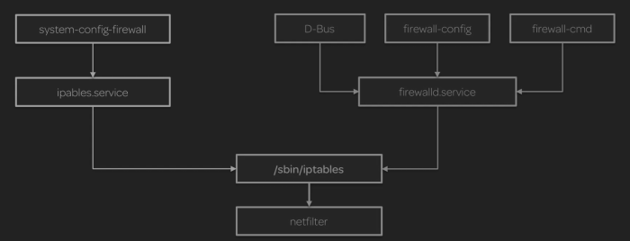

firewall

image from www.linuxacademy.com
a host can accept connections on different ports, all of these active ports are called action listener.
When we enable a firewall no connection are possible in or out unless we set a specific rule.